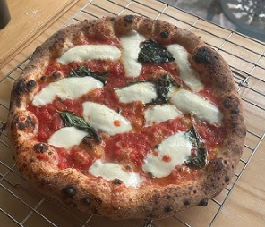

PIZZA RECIPE

Description:
Pizza is a savory dish of Italian origin consisting of a usually round, flat base of leavened wheat-based dough topped with tomatoes, cheese, and often various other ingredients (such as anchovies, olives, meat, etc.), which is then baked at a high temperature, traditionally in a wood-fired oven.
Ingredients:
- 2 cups all-purpose flour
- 1 teaspoon salt
- 1 teaspoon sugar
- 1 packet (2 1/4 teaspoons) active dry yeast
- 3/4 cup warm water
- 1 tablespoon olive oil
- 1 cup pizza sauce
- 2 cups shredded mozzarella cheese
- Your choice of toppings (pepperoni, vegetables, etc.)
Steps:
- Preheat your oven to 475°F (245°C).
- In a bowl, mix flour, salt, and sugar.
- Dissolve yeast in warm water and let it sit for 5 minutes.
- Add the yeast mixture and olive oil to the flour mixture. Knead until smooth.
- Let the dough rise in a warm place for about 30 minutes.
- Roll out the dough on a floured surface to your desired thickness.
- Spread pizza sauce over the base, sprinkle with cheese, and add toppings.
- Bake in the preheated oven for 12-15 minutes or until the crust is golden brown.
Home